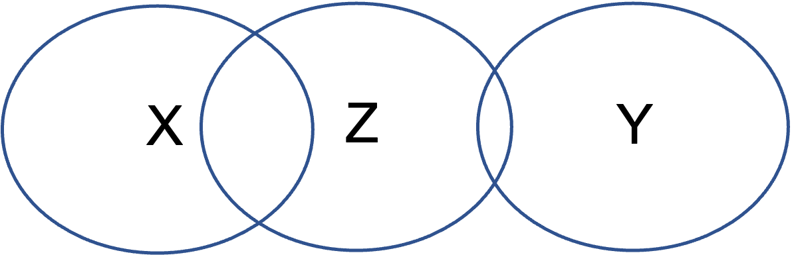
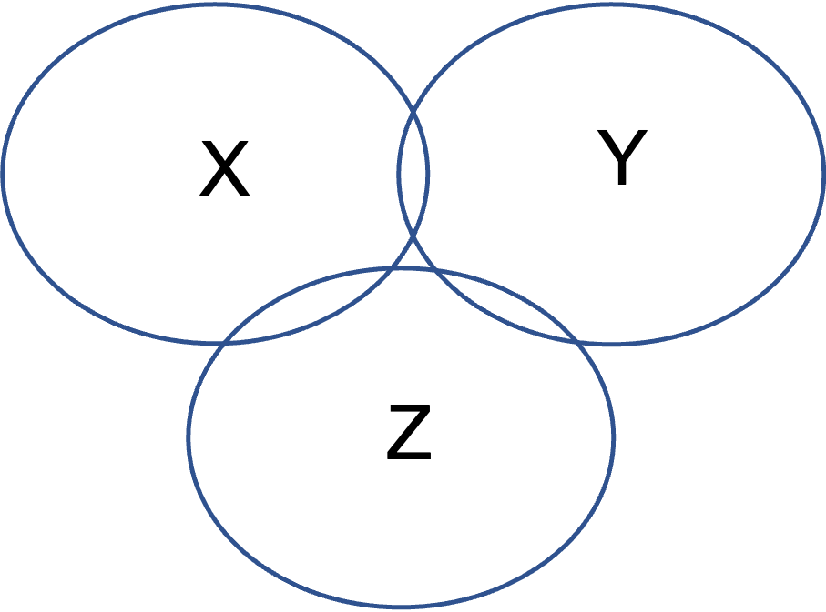
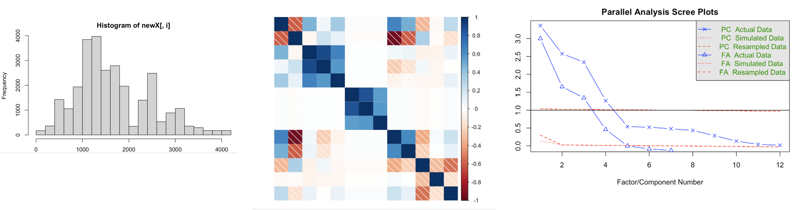
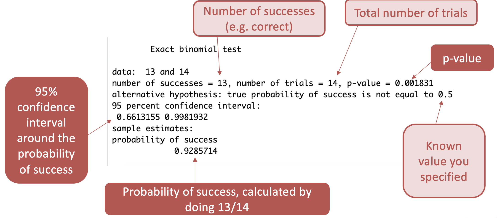

5. Factor analysis & the binomial test
Emma Mills and Amy Atkinson
Introduction
This week is a crossover week between Amy and Emma. Factor Analysis content is needed for learning and WBA5. Questions will not be asked in the class test in week 20 on the Factor Analysis method. The Binomial Test content is needed for learning, WBA5 and the class test.
The rest of this page is split into two parts, Factor Analysis and Binomial Test. They each have their own associated lecture and notes.
Factor Analysis
Watch the Lecture on Factor Analysis here
Factor analysis is an analysis method that aims to take a large number of observed variables, and reduce these to a smaller set of distinct underlying latent variables. In the example below, we have the observed variables on the left. These are the things we can measure, or observe. On the right, we see the latent variables (PA1, PA2, PA3, and PA4), these are not directly measured by us (hence the term latent) and represent a reduction of variables. This is done through measuring how the observed variables “load” onto the latent variables (the loadings are the numbers on the arrows, higher loadings indicate stronger links to that latent variable) – they correlate more with each other than the other variables, which can indicate that they measure a similar underlying variable.
You may have taken a personality test, or other questionnaire style test where a lot of the questions seemed to ask about similar things. In the big five mini-IPIP scale, the two questions for extraversion are “Am the life of the party” and “Talk to a lot of different people at parties”. The expectation is that if there is indeed an underlying variable behind these two questions, then people’s responses should be similar to both questions (score 5 - strongly agree to one statement and you’d probably score the other the same).

Measures of association help answer the question ‘What is the relationship between two variables?’
Correlation looks at pairs of numerical variables
- X & Y below predict Z
- X & Y are completely separate
- X & Y are completely independent of each other
- X & Y below predict Z
- X & Y are completely separate
- X & Y are completely independent of each other
X is showing a larger correlation with Z than Y here
You can draw the diagram like this to show how much information X shares with Z and how much Y shares with Z

Sometimes the relationship between X & Y is not so independent: + X & Y here still predict Z + X & Y but now they are not completely separate + X & Y they share some information + They are correlated with each other + As well as being correlated with Z

We can draw this this way too…
The overlap between X & Y is still independent of their overlap with Z

In this example, the overlap between X & Y is now related to the overlap with Z to a much greater degree…

Multicollinearity
When we have too much overlap between our predictor variables it can be a problem. This is called multicollinearity.
When you have many predictor variables you need to check that they are not too highly correlated with each other. You do this by calling a correlation plot, where correlations > .80 may be problematic. If you have lots of observations, you may be okay, but your model may have problems
Mitigation
Choose a smaller set of variables
- By theory Group together alike variables
- Principal component analysis Estimate underlying structures
- Factor analysis
- Underlying structures are also known as “latent variables”
Factor Analysis
Finding underlying structure or latent variables + Latent variables should have three or more observed variables loading onto them + Correlations between those observed variables should be high + The observed variables should load only onto one variable
Before beginning:
- Standardise your variables
Factor analysis is quite jargon heavy:
Exploratory factor analysis (EFA) and Confirmatory factor analysis (CFA)
Where there is overlap, where variables ‘load’ onto factors:
The shared variance is called ‘communality’
And the unshared variance is called uniqueness
Performance
- A factor should have at least three variables that are loaded to a sufficient level
- Any one variable should have most of its loading on one factor 3.A factor should have good internal consistency (a common (and maybe overused) method is Cronbach’s alpha) 4.Factors should make theoretical sense
Snapshot of an example output below:
- The first column is the labels of the observed variables
- Columns 2 – 5 are the latent variable loadings for each of those observed variables.
- The first three factors each have 3+ of the observed variables
- Length is problematic here

Preparation
Remove outcome variables, categorical variables, ordinal variables
Visualise the prepared dataset
Inspect correlations (guidelines exist!)
Perform some EFA specific tests to determine if a factor analysis is feasible + KMO + Bartlett’s test of sphericity + Parallel analysis + Scree test (visualization) + Packages in R support these

- If the indications are good – then perform a factor analysis
Guidelines exist for all of the following:
Look for patterns inside the factors
Look for patterns between the factors
Look for communalities
Look for factor correlations
Test for internal consistency of the factors
Draw! Report!
Practice
You will need to review the Birthweight example to be able to complete WBA5.
You can choose any of the three examples to explore the process of Factor Analysis.
Birthweight script and data here, and codebook here
Questionnaire script and data here
Single Word Reading script and data here
Or, download all the materials here - treat yourself!
Binomial Test
Watch the Lecture on the Binomial test here
Preamble
Let’s think back to the one-sample t-test
RQ: You are a researcher interested in whether babies born in Germany weigh more than babies born in the UK.
Let’s assume the following are true:
The NHS keeps good records of birth weights in the UK, and that the average birth weight in the UK in 2020 was 3350g.
The health authorities in Germany do not keep good records of birth weights.
You could collect birth weights from a sample of babies born in Germany and compare this to the known average in the UK (3350g).
| Participant | Weight (g) |
|---|---|
| 1 | 3004 |
| 2 | 3052 |
| 3 | 3067 |
| 4 | 4063 |
| 5 | 2134 |
| 6 | 2356 |
| 7 | 4356 |
| 8 | 3567 |
| 9 | 3432 |
| 10 | 3245 |
| 11 | 1467 |
| 12 | 2345 |
| 13 | 4532 |
| 14 | 4352 |
| 15 | 2453 |
| 16 | 2343 |
| 17 | 3453 |
| 18 | 3428 |
| 19 | 2344 |
| 20 | 4353 |
| Mean | 3167.30 |
Is the mean of the sample significantly different from a known value? to test this, we can use a one-sample t-test!
Another example
What if we asked the question: Is the moon made of cheese?
Two answers: Yes, and No.
Does the proportion of participants answering the question correctly differ from the chance guessing rate?
| Participant | Answer |
|---|---|
| 1 | No |
| 2 | No |
| 3 | Yes |
| 4 | No |
| 5 | No |
| 6 | No |
| 7 | No |
| 8 | No |
| 9 | No |
| 10 | No |
| 11 | No |
| 12 | No |
| 13 | No |
| 14 | No |
How many participants answered the question correctly? + Correct (“No”) = 13/14 = 0.93
What is chance guessing rate? + 2 possible answers (yes/no), so chance = 50%, expressed as a proportion, this is 0.5
Note
To convert a percentage to a proportion, divide by 100 = 50/100 = 0.5
Why can’t we use the one-sample t-test?
One sample t-test: Is the mean of the sample significantly different from a known value?
Issue: we can’t calculate a mean value for the sample – we have a proportion who answered correctly
So, we can’t use a one-sample t-test… What can we use?!
The binomial test!
The binomial test compares a sample proportion to a known value
Does a sample proportion differ significantly from a known value?
Known value may be theoretical (e.g. based on chance) or known data about the world (e.g. 26% people die from this disease)
Other examples:
You notice that a lot of the insects in your garden are ants. You work out that 564 out of 712 insects are ants. You hear on a TV show that on average, 64% of insects in UK gardens are ants. Is the proportion of insects that are ants in your garden larger than UK average?
- Proportion of sample that are ants are: 564/712 = 0.79
- Known value (expressed as a proportion)= 0.64
You develop a new vaccine for an illness and give this to 1,000 people - 32/1000 given the vaccine get the illness within a year. You know that approximately 10% of unvaccinated people (or 0.1 expressed as a proportion) get the illness every year. Is the proportion of vaccinated people getting the illness lower than the known value for unvaccinated people?
- Proportion of sample that get the illness: 32/1000 = 0.03
- Known value (expressed as a proportion)= 0.10
Does a sample proportion differ significantly from a known value?
Binomial Test assumptions
The outcome is dichotomous: There are only two possible outcomes
The outcome can be specified as success or failure
Each trial is independent
The probability of ‘success’ remains the same on every trial
Carrying out the binomial test
Below is the code needed for running a binomial test. Pretty simple! binom.test is a function that is in the base R package, meaning that we don’t need to load in any additional libraries to use it.
The first number is the number of successes (thirteen said no), the second number is the total number of trials (we asked fourteen people), and the last number is the known value, here expressed as a proportion (here chance guessing rate)
# Code to run the binomial test
binom.test(13, 14, 0.5)
Exact binomial test
data: 13 and 14
number of successes = 13, number of trials = 14, p-value = 0.001831
alternative hypothesis: true probability of success is not equal to 0.5
95 percent confidence interval:
0.6613155 0.9981932
sample estimates:
probability of success
0.9285714 And here is an annotated version of the output

How do I interpret the p-value?
p ≤ .05 = The observed proportion differs significantly from the known value
p > .05 = The observed proportion does not differ significantly from the known value
I have a significant effect… In what direction is the effect?
Is the probability of success higher or lower than the known value?
The proportion of children answering the question correctly (.93) is significantly higher than the chance guessing rate (.50)
What does the 95% confidence interval tell us?
If we repeat the sampling method many many times and compute a 95% confidence interval, 95% of the intervals would contain the true value in the population.
Range that is likely to contain the true value

Reporting in APA format
A binomial test was conducted to determine whether the proportion of participants answering the question correctly differed significantly from chance guessing rate. This revealed that that the proportion of participants answering the question correctly (93%; 95% confidence interval = 66-100%) was significantly higher than the chance guessing rate (50%; p = 0.002).
Post-lecture activities - Complete ideally before WBA
These can be downloaded here and contain a word document worksheet and the answers.